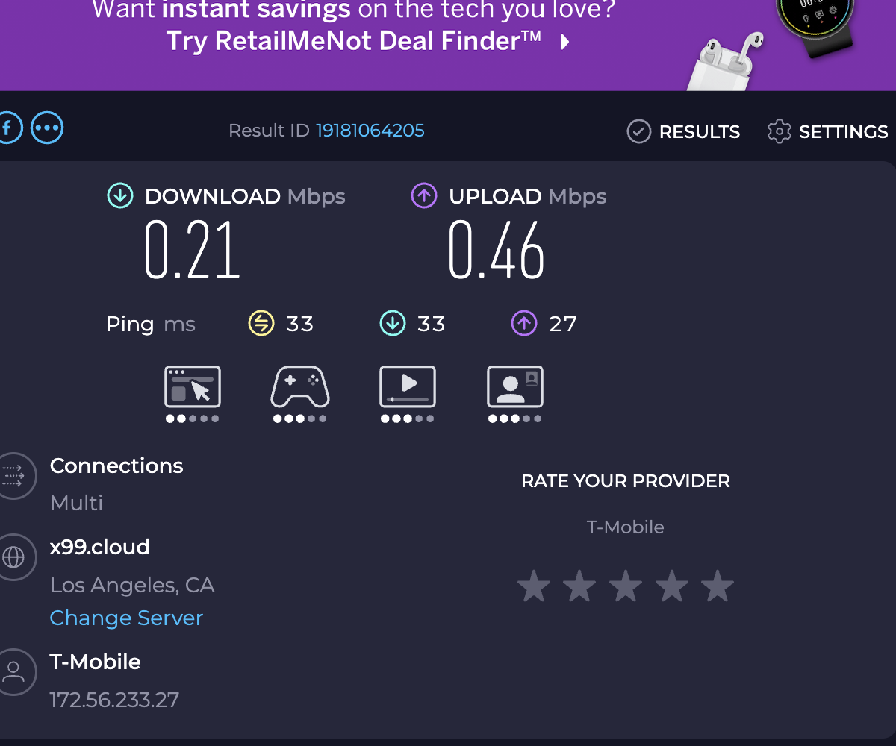
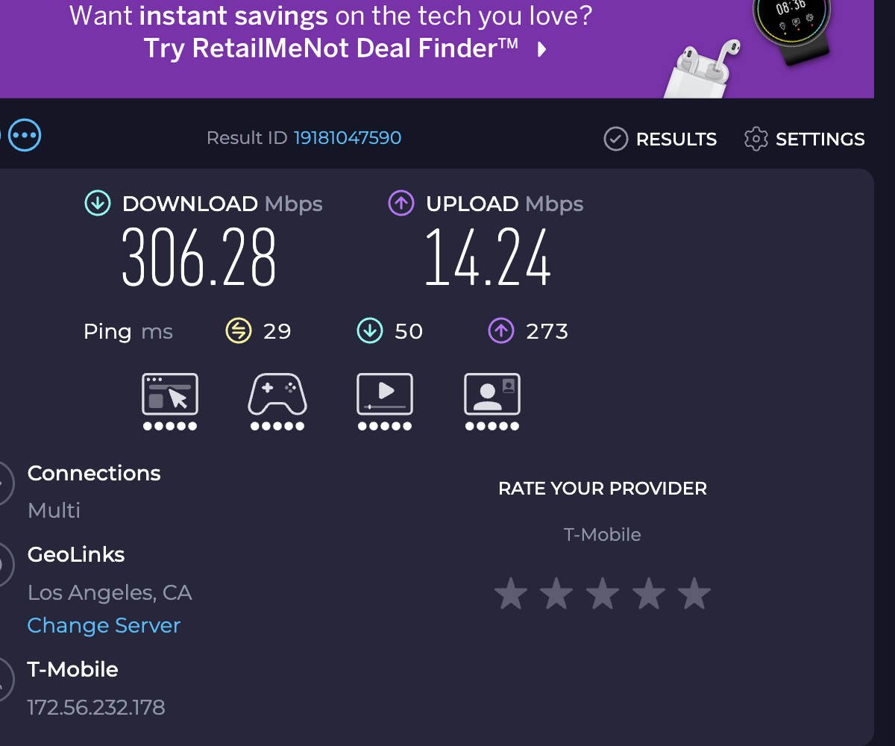

Connect your Mac through your iPhone's cellular connection over USB or nearby Wi-Fi. FastNet Connect on Mac pairs with ProxyDeck on iPhone. No jailbreak.
On your iPhone
Free on the App Store
Pairs with the $29 Mac app. Look for ProxyDeck — Network Lab on the App Store, then choose Mac Bridge.
Install ProxyDeck — FreeiOS 16+. Keep the app in the foreground for Mac Bridge. Network Lab also works without a Mac.
On your Mac
$29 one-time · no subscription
The Mac app that connects to ProxyDeck. Mac Bridge requires both apps and a paid Mac license.
Set up FastNet on MacApple Silicon · macOS 13+ · Buy a Mac license
Keep ProxyDeck open on your iPhone while connected. Mac Bridge stops when it leaves the foreground. Installing the free iPhone app alone does not connect your Mac. See all setup steps.


On your iPhone? Install ProxyDeck now, then open fastnet-site.vercel.app/#mac-setup on your Mac for step 2. The Mac installer cannot run on iPhone.
The App Store name is ProxyDeck — Network Lab. It is free. Network Lab works independently; FastNet Connect uses its optional Mac Bridge mode.
Install ProxyDeck — FreeOn an Apple Silicon Mac with macOS 13+, download and open FastNet.pkg. A $29 one-time Mac license is required to activate FastNet Connect. Already purchased? Use your existing license key.
Download Mac installerFor macOS only, not iPhone. Downloading the installer does not include a license.
Open ProxyDeck, select Mac Bridge, and tap Start Mac Bridge. Keep ProxyDeck in the foreground, then connect from FastNet Connect over USB or nearby peer-to-peer Wi-Fi.
Uses your phone's data, not hotspot allowance. No throttling, no data caps.
All traffic stays local between your devices. No cloud servers, no accounts, no data collection.
No terminal commands, no config files. Connect over USB or Wi-Fi and click once — all your Mac's traffic is routed automatically.
One-time purchase. No subscription. Stop paying $10-25/month extra for hotspot data you already have.
macOS 13+ (Apple Silicon) · iPhone with iOS 16+ · USB or Wi-Fi · 30-day refund
ProxyDeck is the free iPhone app. FastNet Connect is the separately purchased Mac app. You need both for Mac Bridge.
Install ProxyDeck — Free Buy Mac license — $29Already have a Mac license? Go to the Mac download and setup. Keep ProxyDeck in the foreground during use.
iproxy 1082 1082 plus a SOCKS5 server on iPhone is the same idea, free, and well-documented. FastNet is for people who want it to just work without terminal commands, manual port forwarding, or remembering to set the system proxy each time. If you're comfortable in terminal and only need it occasionally, the manual setup is fine.